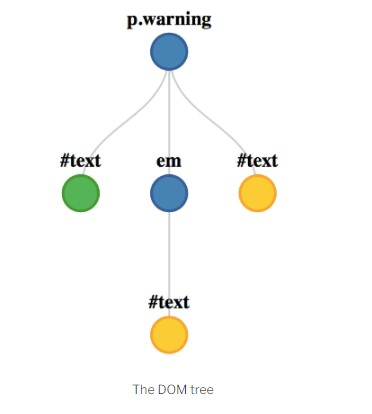

Week03
Document Object Model
Document Object Model (DOM)
- The Document Object Model is a way of representing a page of HTML as a tree of nodes.
- <p class='warning'>Something has gone <em>very</em> wrong!</p>
- 
- The DOM is not actually part of JavaScript because it is language agnostic (although JavaScript is, by far, the language most commonly used with it
- We can use JavaScript to access and modify different parts of a web page using a special built-in object called document
History of DOM
- The DOM level 2 specification was published in 2000 and introduced the popular getElementById() method, which made it much easier to access specific elements on a web page.
- The DOM specification is developed as a living standard.
Getting Elements
- The DOM provides several methods that allow us to access any element on a page.
- const body = document.body;
Setting An Element's Attributes